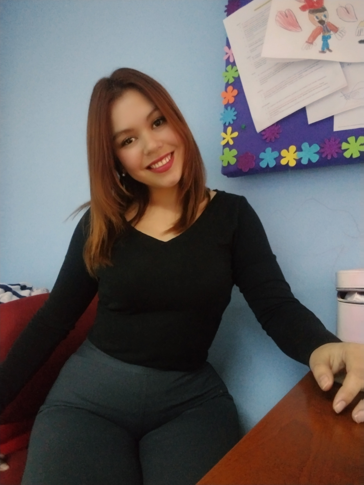

Currículum Vitae

Resumen
Psicopedagoga y licenciada en educación diferencial con mención en trastornos de Lenguaje y comunicación oral.
Cuenta con más de ocho años de experiencia en el área educativa.
Habilidades en manejo de grupos y coordinación de la unidad técnico pedagógica de un establecimiento educativo.
Datos Personales
- Nombre completo: Hurí Carolina Espinoza Ibaceta
- Edad:33 años
- Fecha Nacimiento: 01 de octubre de 1991
- Lugar de residencia: Condomionio Santo Domingo # 241, torre 1 dpto 3b. Ciudad de San Felipe. Chile
- Nacionalidad: Chilena
Antecedentes Académicos
- Educación media completa: Año 2011
- Titulada en Psicopedagogia en Instituto Profesional AIEP: Año 2017
- Licenciada en educación diferencial mención trastornos del lenguaje y comunicación oral en Universidad SEK: Año 2020
Antecedentes laborales
Trabaja como educadora diferencial especialista en trastornos de lenguaje, en escuela especial de lenguaje Makiato desde año 2017 hasta la fecha.
Portafolio 💼
Instagram 📷